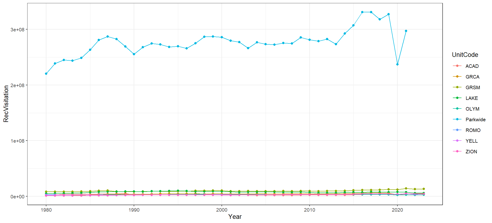
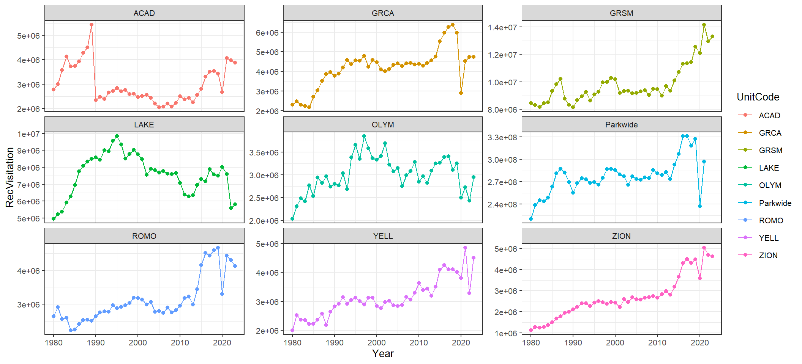

Chapter 2 Data Wrangling and Visualization
2.0.1 Lesson Objectives
In the last lesson, we learned how to pull data from an API and reduce redundancies in our workflows through functions and iteration. In this lesson we will use the functions in the previous lesson to learn how to manipulate data frames with the {tidyverse}, and plot elegant time series graphs with the {ggplot2}, {scales} and {plotly} packages.
There are five exercises in this lesson that must be completed.
2.1 Pulling in necessary packages and data sets
library(tidyverse) # ggplot2 is included in the {tidyverse}
library(httr)
library(jsonlite)
library(plotly) # new - need to install!
library(scales) # new - need to install!Using the parkwide_visitation() function from the last lesson and mapping, let’s pull park-wide visitor data from 1980-2023, and name the final object parkwide. (Code hack: we can use 1980:2023 to create a vector of years so we don’t have to write each year out!)
parkwide_visitation <- function(year){
# pull in the data
raw_data <- httr::GET(url =
# parse out year so that it can be chosen with the "year" argument, using paste0()
paste0("https://irmaservices.nps.gov/v3/rest/stats/total/", year))
# convert content to text
extracted_data <- httr::content(raw_data, as = "text", encoding = "UTF-8")
# parse text from JSON to data frame
final_data <- jsonlite::fromJSON(extracted_data)
return(final_data)
}
years <- (1980:2021)
parkwide <- years %>%
map(~ parkwide_visitation(year = .x)) %>%
bind_rows()2.1.1 Exercise #1
Using the unit_visitation() function from the last lesson and mapping, pull visitor data from 1980-2023 for the following park units: ROMO, ACAD, LAKE, YELL, GRCA, ZION, OLYM, and GRSM. Name the final output units.
unit_visitation <- function(park_unit,
start_month = 1,
start_year,
end_month = 12,
end_year) {
raw_data <- httr::GET(
url = paste0(
'https://irmaservices.nps.gov/v3/rest/stats/visitation?unitCodes=',
park_unit,
'&startMonth=',
start_month,
'&startYear=',
start_year,
'&endMonth=',
end_month,
'&endYear=',
end_year
)
) %>%
httr::content(as = 'text', encoding = 'UTF-8') %>%
jsonlite::fromJSON()
}
park_units <- c('ROMO', 'ACAD', 'LAKE', 'YELL', 'GRCA', 'ZION', 'OLYM', 'GRSM')
units <- park_units %>%
map(~ unit_visitation(park_unit = .x, start_year = 1980, end_year = 2023)) %>%
bind_rows()2.2 Exploring our data
Look at the data frame structure of parkwide and units; they’re exactly the same! So let’s go ahead and bind those together:
… except, the rows in parkwide’s UnitCode and UnitCode columns are empty. 😑 Let’s fix the UnitCode column to list “Parkwide” using mutate() and an if_else() statement:
Think of the above if_else() operation as: “If the column UnitCode is NA, replace NA with”Parkwide“. Otherwise, preserve what is already in the UnitCode column.”
Now that we have a single data set containing all of the NPS recreational visitation data that we’ve pulled, let’s start exploring it! But first, let’s aggregate the monthly data into annual data using group_by() and summarize():
annual_visitation <- visitation %>%
group_by(UnitCode, Year) %>%
# we only care about recreational visitors:
summarize(RecVisitation = sum(RecreationVisitors))
annual_visitation## # A tibble: 394 × 3
## # Groups: UnitCode [9]
## UnitCode Year RecVisitation
## <chr> <int> <int>
## 1 ACAD 1980 2779666
## 2 ACAD 1981 2997972
## 3 ACAD 1982 3572114
## 4 ACAD 1983 4124639
## 5 ACAD 1984 3734763
## 6 ACAD 1985 3745570
## 7 ACAD 1986 3929054
## 8 ACAD 1987 4288154
## 9 ACAD 1988 4502283
## 10 ACAD 1989 5440952
## # ℹ 384 more rowsWhat does visitation data look like through time? First we can try to graph all of the park units together:
ggplot(data = annual_visitation)+
geom_point(aes(x = Year, y = RecVisitation, color = UnitCode)) +
geom_path(aes(x = Year, y = RecVisitation, color = UnitCode)) +
scale_y_continuous(labels = scales::label_scientific()) +
theme_bw(base_size = 10)
… yikes, not surprisingly, parkwide recreational visitation is wayyyy higher than our individual unit’s visitation data, making our graph pretty useless. It might be nice to have each park unit in a graph of its own.
We can create individual graphs for each unit using facet_wrap(), and we can set the y-axes for each plot to "free_y":
ggplot(data = annual_visitation) +
geom_point(aes(x = Year, y = RecVisitation, color = UnitCode)) +
geom_path(aes(x = Year, y = RecVisitation, color = UnitCode)) +
scale_y_continuous(labels = scales::label_scientific()) +
facet_wrap(~UnitCode, scales = "free_y") +
theme_bw(base_size = 10)
We can also make this plot interactive by feeding it into {plotly}’s ggplotly() function:
plotly::ggplotly(
ggplot(data = annual_visitation) +
geom_point(aes(x = Year, y = RecVisitation, color = UnitCode)) +
geom_path(aes(x = Year, y = RecVisitation, color = UnitCode)) +
scale_y_continuous(labels = scales::label_scientific()) +
facet_wrap(~UnitCode, scales = "free_y") +
theme_bw(base_size = 10)
)2.2.1 Exercise #2
Create an interactive graph with two separate panes: one showing park-wide visitation, the other showing all the individual park units together. Both panes should have different y-axes.
parkwide_vs_individual <- annual_visitation %>%
mutate(Group = ifelse(UnitCode == "Parkwide", "AllParks", "IndividualParks"))
plotly::ggplotly(
ggplot(data = parkwide_vs_individual) +
geom_point(aes(x = Year, y = RecVisitation, color = UnitCode)) +
geom_path(aes(x = Year, y = RecVisitation, color = UnitCode)) +
scale_y_continuous(labels = scales::label_scientific()) +
facet_wrap(~Group, scales = "free_y") +
theme_bw(base_size = 10)
)It is pretty clear that some park units get orders of magnitude more visitors than others. But just how much of the total park visitation do each of these parks account for from year to year? Here we walk through two methods to tackle this question, pivoting and joining, to get park unit visitation side-by-side with park-wide data.
2.3 Pivoting
Currently, our annual visitation data is considered long because we have all of our NPS visitation data in one column, with multiple rows representing the same year. We can make this data wide by using the function pivot_wider()
wide_data <- annual_visitation %>%
select(Year, UnitCode, RecVisitation) %>%
pivot_wider(., names_from = UnitCode, values_from = RecVisitation)… where names_from represents the column with the values you are hoping to spread into new columns, and values_from represents the data you want to fill these new columns with.
We can make the data set long again by using the function pivot_longer():
long_data <- wide_data %>%
pivot_longer(cols = -Year,
names_to = "Park",
values_to = "RecVisitation")… where cols are the columns we want to gather into one column (or, the column(s) you DON’T want to gather), while names_to and values_to are the names and values for the new columns produced from the pivot.
2.3.1 Exercise #3
Using wide_data as the starting point, create an interactive time series plot showing the annual percentage of the total recreational visitation made up by all park units. In other words, a visual that allows us to see how much each park unit contributes to the total NPS system’s recreational visitation.
visitation_percentage <- wide_data %>%
mutate(across(all_of(park_units), ~ . / Parkwide * 100, .names = "{.col}_Percentage")) %>%
select(contains("_Percentage"), Year) %>%
pivot_longer(cols = contains("_Percentage"),
names_to = "Park",
values_to = "Percentage")
plotly::ggplotly(
ggplot(data = visitation_percentage) +
geom_point(aes(x = Year, y = Percentage, color = Park)) +
geom_path(aes(x = Year, y = Percentage, color = Park)) +
theme_bw(base_size = 10)+
labs(
title = "Annual Percentage of Total Recreational Visitation",
y = "Percentage of Parkwide Visitation"
) +
guides(color = guide_legend(title = "Parks"))
)2.4 Joining
Another way of getting park-wide visitation side-by-side with the park unit data is through the use of joining our original units and parkwide data sets:
joined_data <- inner_join(x = units,
# Let's put "Parkwide" in the UnitCode column so it isn't empty
y = parkwide %>% mutate(UnitCode = "Parkwide"),
by = c("Year", "Month"))… where x and y are the two data sets you want joined, and by indicates the column(s) to match them by. When the two data sets you are trying to join have other columns that have the same name, the original column names get “.x” and “.y” appended to them according to their position in the join. Note: there are several ways of joining data. Explore them with ?`mutate-joins` and ?`filter-joins`.
2.4.1 Exercise #4
Using joined_data as the starting point, create an interactive time series plot showing the annual percentage of the total recreational visitation made up by each park unit. This plot should look nearly identical to the previous plot.
joined_percentage <- joined_data %>%
group_by(Year, UnitCode.x) %>%
summarize(
RecVisitation_Individual = sum(RecreationVisitors.x),
RecVisitation_Parkwide = sum(RecreationVisitors.y),
Visitation_Percentage = (RecVisitation_Individual / RecVisitation_Parkwide *
100)
) %>%
ungroup()
plotly::ggplotly(
ggplot(data = joined_percentage, aes(
x = Year, y = Visitation_Percentage, color = UnitCode.x
)) +
geom_point() +
geom_path() +
theme_bw(base_size = 10) +
labs(
title = "Annual Percentage of Total Recreational Visitation",
y = "Percentage of Parkwide Visitation"
) +
guides(color = guide_legend(title = "Parks"))
)2.4.2 Exercise #5
Which park on average has the most recreational visitation? Which park has the least recreational visitation? Base your response on the data starting in 1990, ending in 2023. Defend your answer with numbers!
joined_percentage %>%
filter(Year >= 1990) %>%
group_by(UnitCode.x) %>%
summarise(MeanVisitation = mean(Visitation_Percentage))## # A tibble: 8 × 2
## UnitCode.x MeanVisitation
## <chr> <dbl>
## 1 ACAD 0.930
## 2 GRCA 1.61
## 3 GRSM 3.50
## 4 LAKE 2.84
## 5 OLYM 1.12
## 6 ROMO 1.14
## 7 YELL 1.17
## 8 ZION 1.03#GRSM has the most recreational visitation and ACAD has the least based off the mean of the visitation percentage starting in 1990# Intro to Spatial Data in R
2.5 1. Spatial Data Formats
Vector Data
Locations (points)
- Coordinates, address, country, city
Shapes (lines or polygons)
- Political boundaries, roads, building footprints, water bodies
Raster Data
Images (matrix of cells organized by rows and columns)
Satellite imagery, climate, landcover, elevation

2.6 2. Import and manipulate spatial data
There are a few new R packages we will need to work with spatial data, listed below with hyperlinks and decribed in more detail throughout this and other lessons.
sf: working with vector dataterra: working with raster datatmap: visualizing spatial data (i.e., making maps!)tigris: import vector data from the U.S. Census database (i.e., political boundaries, roads, etc.)elevatr: import elevation datargbif(optional) : import species occurrence data from the GBIF databasesoilDB(optional) : import snow depth data from SNOTEL sites across the U.S.
We’ve already added these packages to a ‘setup.R’ script in this project directory, so you can use source("setup.R") at the beginning of each lesson if you want, otherwise you will need to install each new one manually with install.packages().
2.6.2 tigris
2.6.3 Polygons
All the data we are working with in this lesson is confined to the state of Colorado. Let’s start by pullin g in political boundaries for Colorado counties with the
g in political boundaries for Colorado counties with the tigris package, which returns a shapefile consisting of polygons for each county.
The tigris package is one of many data retrieval R packages that uses API calls to pull in data from various online/open databases directly into your R session, without the need to separately download. When you close out your R session, these ‘temp’ files are erased, so it does not use up any of your local storage.
At the end of this lesson you will learn how to save shapefiles to your computer if you do in fact want to store and use them in the future (e.g., you manipulated a data set quite a bit and don’t want to re-run the entire process every new R session).
2.6.4 Lines
tigris has many other data sets in addition to political boundaries. Today let’s work with another shapefile, importing roads for Larimer county, which returns a polyline dataset for all roads in Larimer County.
2.6.5 tmap
Throughout this lesson we will be using the tmap package to produce quick static or interactive maps.
tmap allows for both static (“plot” mode) and interactive (“view” mode) mapping options, which you can set using the function tmap_mode() . For today we will be making quick interactive plots. Once you set the mode with tmap_mode(), every plot call to tmap after that produces a plot in that mode.
Lets view our Colorado counties and Larimer County roads shapefiles. To make a “quick thematic map” in tmap you can use the qtm() function. You can also use tm_shape() plus the type of spatial layer (e.g., tm_polygons()) to add your layers to the map. Both methods below will produce the same exact map, and you may think why would you ever need to use the tm_shape() method since its more code? The answer may be rarely, but there are some cases where you can customize your maps better with tm_shape() that we will see later on.
Also notice that tmap uses + signs to tack on additional maps/elements similar to ggplot2 code (i.e., no pipe!)
Note: map rendering may take a few seconds because the roads layer is pretty large and detailed.
Mess around with this map a little bit. See that you can change the basemap, turn layers on and off, and click on features to see their attributes.
There are a ton of ways to customize these maps (more details on this in the spatial viz lesson!). For example, co_counties has an ‘ALAND’ variable, which represents the total land area of each county. To color by that variable we would use:
Let’s inspect the spatial data sets a little more. What do you see when you run the following line of code?
2.6.6 sf
By default, the tigris package imports spatial data in sf format, which stands for ‘simple features’. The sf package provides an easy and efficient way to work with vector data, and represents spatial features as a data.frame or tibble with a geometry column, and therefore also works well with tidyverse packages to perform manipulations like you would a data frame.
For example, we are going to do an exercise for the Poudre Canyon Highway, so we want to filter out the roads data set to only those features. Using your investigative geography skills and your interactive map, find the highway on your map and find out what the exact ‘FULLNAME’ attribute is, and use that to filter() the data set. Call the new roads feature poudre_hwy.
2.6.7 Points
Most often when you are working with points, you start with an excel file or something similar that consists of the raw latitude and longitude. When you have spatial data that is not explicitly spatial yet or not in the sf format, you use the st_as_sf() function to transform it.
Lets work with a couple locations along the Poudre highway, making a small data frame of their coordinates:
poudre_points <- data.frame(name = c("Mishawaka", "Rustic", "Blue Lake Trailhead"),
long = c(-105.35634, -105.58159, -105.85563),
lat = c(40.68752, 40.69687, 40.57960))Right now, poudre_points is just a data frame (run class(poudre_points) to check). We need to convert it to a spatial (sf) object first in order to map and spatially analyze it.
Within the st_as_sf() function we need to specifying the longitude and latitude columns in our poudre_points data frame and the CRS (Coordinate Reference System). Note that ‘x’ (longitude) always goes first followed by ‘y’ (latitude). Otherwise it will map your points on the other side of the world.
poudre_points_sf <- st_as_sf(poudre_points, coords = c("long", "lat"), crs = 4326)
qtm(poudre_hwy)+
qtm(poudre_points_sf)Note the 4-digit number we assign for crs. This is an EPSG code, which is tied to a specific CRS called WGS84 and one of the most common reference systems coordinates are recorded in (often noted by the fact that the values are in decimal degrees). This is used by Google Earth, the U.S. Department of Defense and all GPS satellites (among others). A full list of EPSG codes and coordinate reference systems can be found here. Note, there are A LOT. Probably the most common used in the U.S. are WGS84 (a global CRS) and NAD83 (used by many U.S. federal agencies).
2.6.8 Coordinate Reference Systems
Probably the most important part of working with spatial data is the coordinate reference system (CRS) that is used. The CRS describes how and where your spatial data is located on Earth. There are numerous different CRS’s depending on when and how the data was collected, the spatial location and extent it was collected, etc. In order to analyze and visualize spatial data, all objects must be in the exact same CRS.
We can check a spatial object’s CRS by printing it the object name to the console, which will return a bunch of metadata about the object. You can specifically return the CRS for sf objects with st_crs().
# see the CRS in the header metadata:
co_counties
#return just the CRS (more detailed)
st_crs(co_counties)You can check if two objects have the same CRS like this:
Uh oh, the CRS of our points and lines doesn’t match. While tmap performs some on-the-fly transformations to map the two layers together, in order to do any analyses with these objects you’ll need to re-project one of them. You can project one object’s CRS to that of another with st_transform like this:
2.6.10 elevatr
Lets import some elevation data using the elevatr package. The function get_elev_raster() returns a raster digital elevation model (DEM) from the AWS Open Data Terrain Tiles. For this function you must supply a spatial object specifying the extent of the returned elevation raster and the resolution (specified by the zoom level z). We are importing elevation at ~ 1km resolution (more like 900 m), and we can use our co_counties object as the extent we want to download to, which will return elevation tiles for the state of Colorado.
Note: ‘extent’ is the spatial bounding box of the data (represented by the x,y coordinates of the four corners inclusive of the entire spatial data)
By default, tmap uses a categorical symbology to color the cells by elevation. You can change that to a continuous palette like this (an example of when tm_shape() allows us to edit the map more):
When we see this on a map, we see that it actually extends beyond Colorado due to how the Terrain Tiles are spatially organized.
Let’s inspect this raster layer a little. By printing the object name to the console we see a bunch of metadata like resolution (cell/pixel size), extent, CRS, and file name.
2.6.11 terra
We use the terra package to work with raster data. For example, we only want to see elevation along the Poudre highway. We can use crop to crop the raster to the extent of our poudre_hwy spatial object using the ext() function to get the extent (i.e., bounding box) of our poudre_hwy object.
However…the following line of code doesn’t work:
This doesn’t work because our co_elevation object is actually not in the proper format to work with the terra package. The elevatr package still uses the raster package to work with raster data, however this package is outdated and we want to stick with terra for this course and any future work you do with raster data.
terra uses objects of a new class called SpatRaster. Converting a RasterLayer to a SpatRaster is quick using the rast() function.
Now check the class:
Now we can use terra functions, and re-run the crop() code we tried earlier:
Plot all our spatial layers together:
2.7 3. Reading and Writing Spatial Data
2.7.1 3.1 Writing spatial data
All of the spatial data we’ve worked with are only saved as objects in our environment. To save the data to disk, the sf and terra packages have functions to do so. You are not required to save these files, but if you want to follow along with these functions save the data to the ‘data/’ folder.
To save vector data with sf, use write_sf()
While you can give the file any name you want, note that you must put ‘.shp’ as the extension of the file. While ‘.shp’ stands for ‘shapefile’, if you run the code above you’ll notice a bunch of other files are saved, having the same file name but different extensions. These are auxiliary files required to properly work with the .shp shapefile. If you ever want to share or move a shapefile, you must zip all the auxiliary files and .shp file together. Think of them as a package deal!
To save raster data with terra use writeRaster()
Same as with the vector data, when saving raster data you must add the ‘.tif’ file extension to the name. There are various formats raster data can be stored as (e.g., ASCII, ESRI Grid) but GeoTiffs are the most common and generally easiest to deal with in R.
2.7.2 3.2 .RData Files
Another way you can store data is saving your environmental variables as R Data objects. You may have already seen ‘.RData’ files in your folders before if you ever click ‘yes’ when closing out of RStudio asks you to save your workspace. What this does is save everything in your environment to a file with a ‘.RData’ extension in your project directory, and then every time you open your project it reloads everything that was in the environment. This however is often poor practice, as it prevents you from writing reproducible code and all those variables start racking up storage space on your computer. We recommend changing this setting by going to Global Options and under ‘Workspace’ set ‘Save workspace to .RData on exit’ to ‘Never’.
However, there are times you may want to save your variables as R files, such as when you have a set of variables you want to quickly re-load at the beginning of your session, or some files that are pretty large in size which is often the case with spatial data (R object files are much smaller). You can save single or multiple variables to an .RData file, or single variables to an .RDS file.
Since the poudre_hwy and poudre_points_prj were objects you created in this session, to avoid the need to recreate them you can save them to an .RData file with save() :
Note that you must add the ‘file =’ to your second argument.
Now to test out how .RData files work, remove them from your environment with rm() (be careful with this function though, it is permanent!) and load them back in with load()
See they are no longer in your Environment pane, but after you load the .RData file back in, it loads in those two objects with the same environmental names they were given when you saved them.
Note that terra objects don’t properly save to .RData files, but there is a work around if you save a single terra object as an .RDS file with saveRDS. Here is that workflow, there is just a second step to ‘unpack’ the loaded .RDS object with rast().
Note that with .RDS files you must assign the loaded file to a new environmental variable (unlike with .RData that returns the objects with the exact names they had before).
2.7.3 3.3 Reading Spatial Data
To read in shapefiles, you use read_sf() . If you saved the poudre_hwy shapefile in the steps above, you can load it back into your environment like this:
Notice that when reading shapefiles into R you only specify the file with the ‘.shp’ extension, and don’t need to pay much attention to any of those auxiliary files. As long as all the other auxiliary files are saved in that same folder, it will read in the shapefile correctly, but if you are missing any then the .shp file becomes useless on its own.
To read in raster files you use the rast() function and file path with the appropriate file extension
Remember when reading in files you will want to assign them to a new variable name with <- to keep them in your environment.
2.8 4. Exercises
Explore the use of
extractfrom theterrapackage by running?terra::extract. (Note we need to specifyterra::because ‘extract’ is a function name in multiple packages we may have loaded in our session).How would you extract the elevation at each of the three points in
poudre_points_prj? (2 pts)Choose your favorite state (other than Colorado). For that state, carry out the following tasks: (8 pts)
Import the county boundaries for your state:
Import elevation for your state (using your new counties object as the extent/bounding box and set z = 7):
Create an interactive map of your state counties and the elevation layer underneath (note: use ?qtm to see the argument options for fill = to draw only the county borders, i.e. remove the fill color).
Choose a single county within your state county object, and crop your elevation layer to the extent of that county (note: use filter() to create an object of just your selected county that you want to crop to). Follow the steps above we used to crop co_elevation to the poudre hwy.